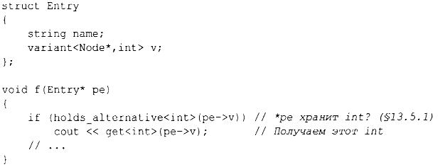

⇐2.3. Классы 2.5. Перечисления⇒
2.4. Объединения
Объединение (union) представляет собой структуру (struct), в которой все члены располагаются по одному и тому же адресу, так что union занимает столько же памяти, сколько и его наибольший член. Естественно, union может хранить одновременно значение только одного члена. Например, рассмотрим запись таблицы символов, которая хранит имя и значение. Значение может иметь тип либо Node*, либо int:
Члены р и i никогда не используются одновременно, так что получается пустая трата памяти. Ее легко избежать, указав, что оба члена являются членами union:

Язык не отслеживает, какие значения хранятся в объединении, так что это должен делать программист :
Поддержание соответствия между полем типа (здесь - t) и типом, содержащимся в объединении, чревато ошибками. Чтобы избежать ошибок, можно обеспечить это соответствие, инкапсулируя объединение и поле типа в класс и предлагая доступ только через функции-члены, которые гарантируют корректное использование объединения. На уровне приложений абстракции, основанные на таких маркированных объединениях (tagged unions), являются достаточно распространенными и полезными. Использование же "голых" объединений лучше всего свести к минимуму.
Тип стандартной библиотеки variant может использоваться для устранения большинства прямых применений объединений. variant сохраняет значение одного из множества альтернативных типов (§13.5.1). Например, variant<Node*, int> может содержать либо Node*, либо int.
С помощью variant пример Entry может быть записан следующим образом:
Для множества применений variant проще и безопаснее, чем union.